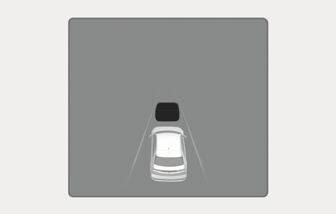

스마트 크루즈 컨트롤 (SCC)
스마트 크루즈 컨트롤은 전방의 차량을 인식하여 거리를 유지하고, 운전자가 설정한 속도로 주행하도록 도와줍니다.
-
SCC는 Smart Cruise Control의 약자입니다.
-
스마트 크루즈 컨트롤의 작동상태를 클러스터 주행 보조 뷰에서도 표시합니다. 클러스터를 주행 보조 모드로 설정하는 방법은 '클러스터 설정하기'를 참고하십시오.

-
클러스터 사양 또는 테마에 따라 클러스터에 표시되는 이미지나 색상이 다를 수 있습니다.